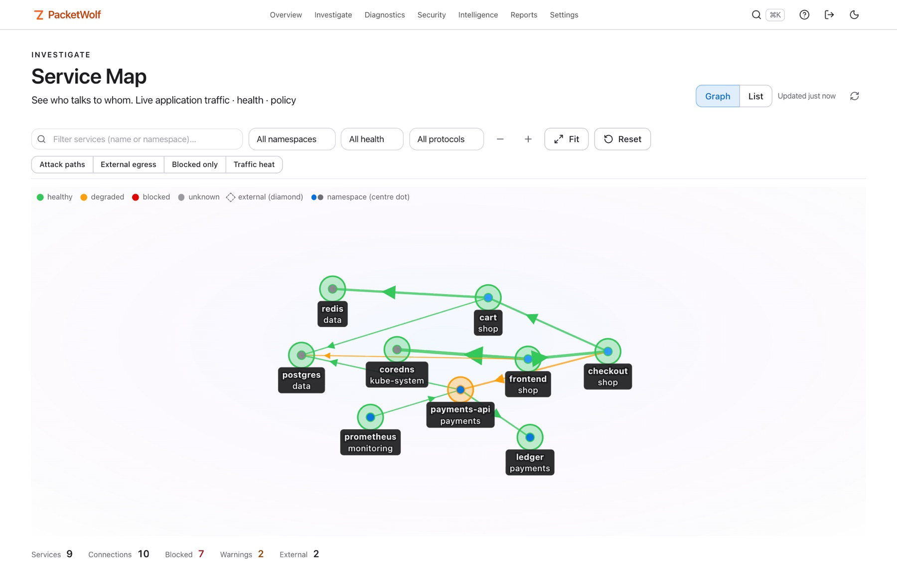
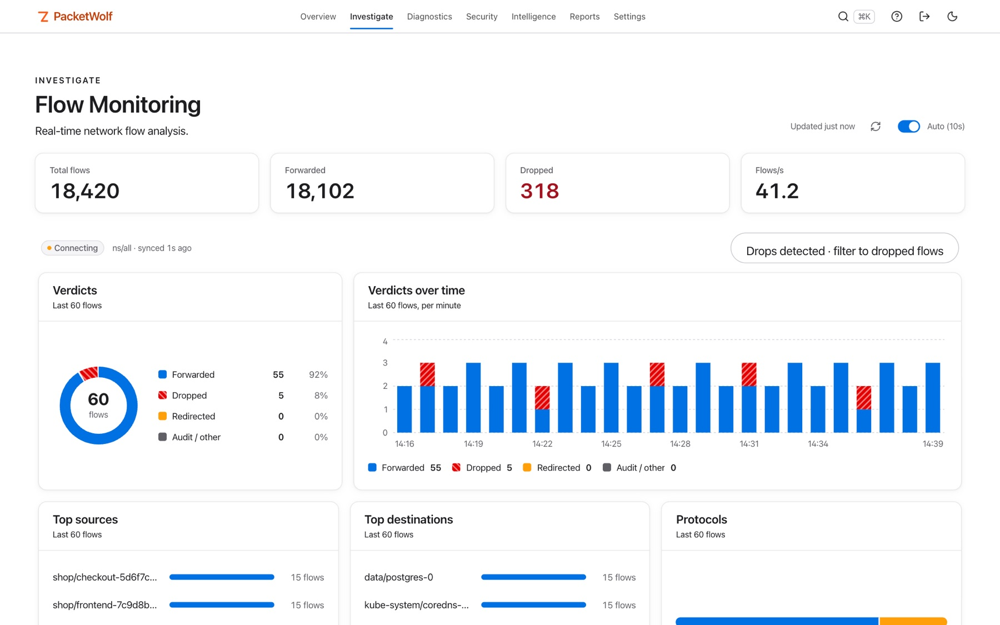
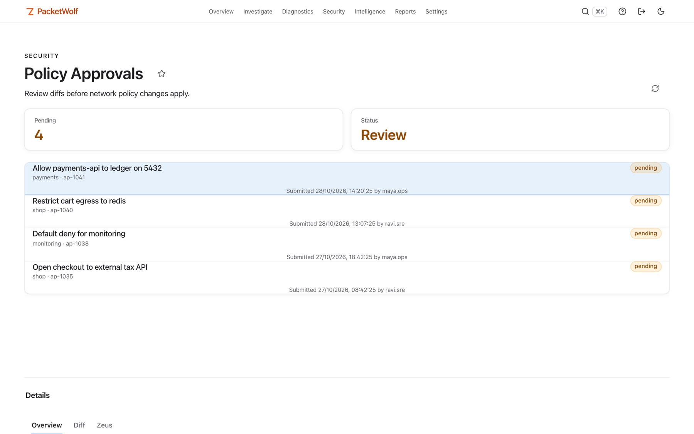
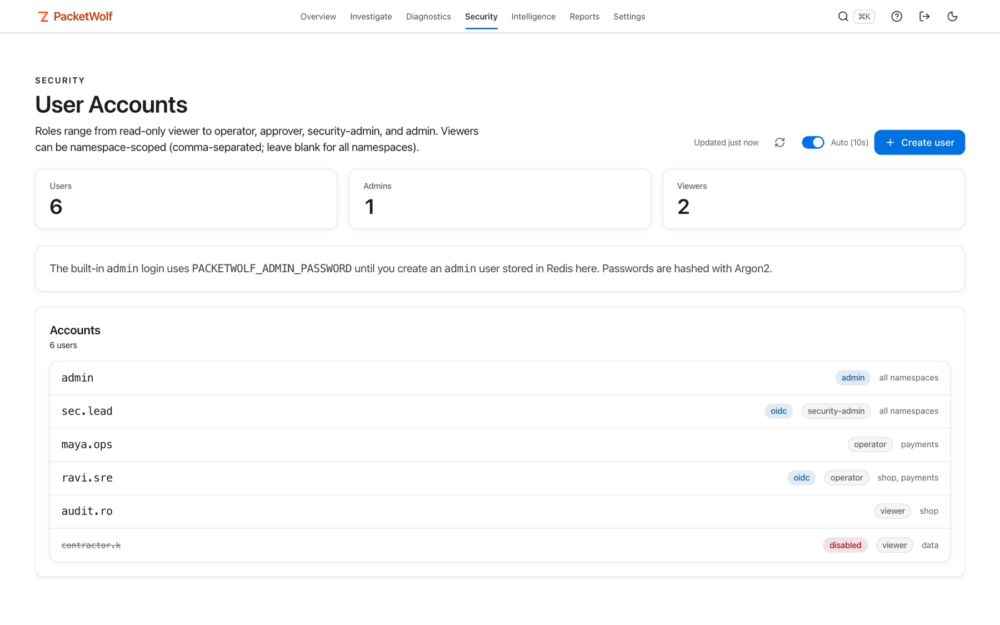
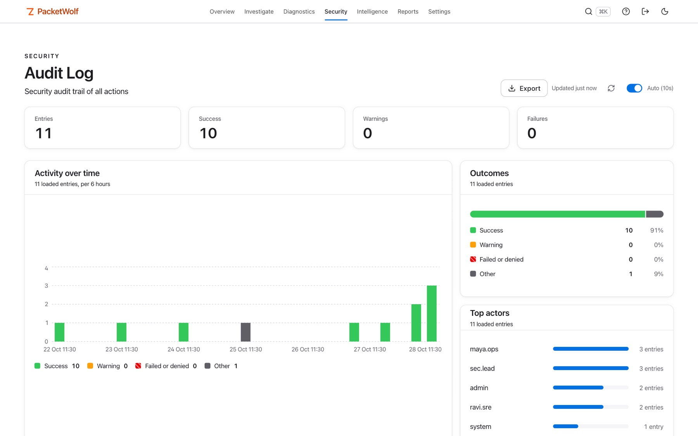
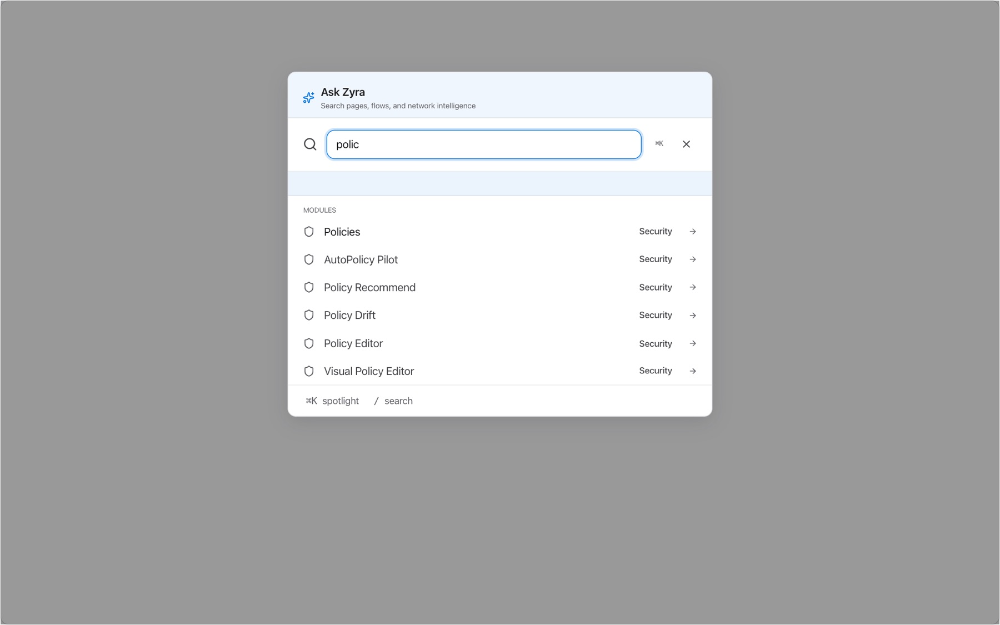
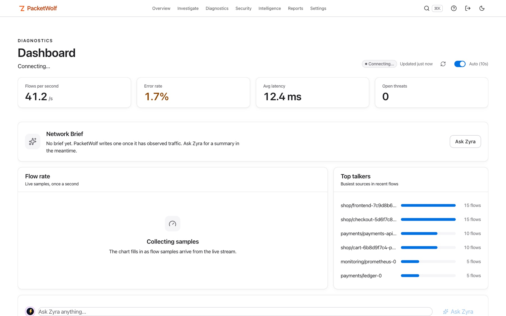
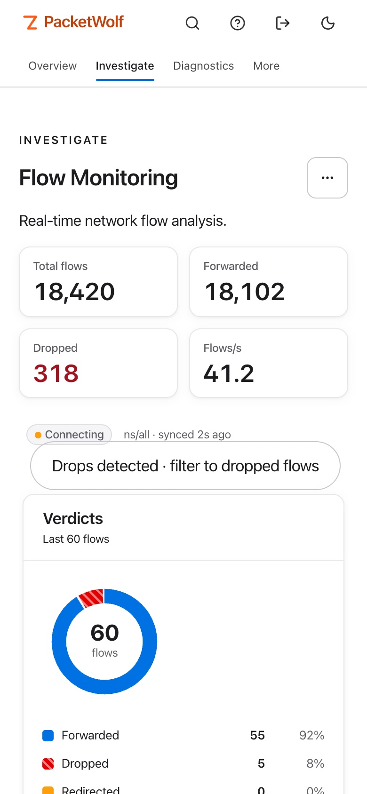
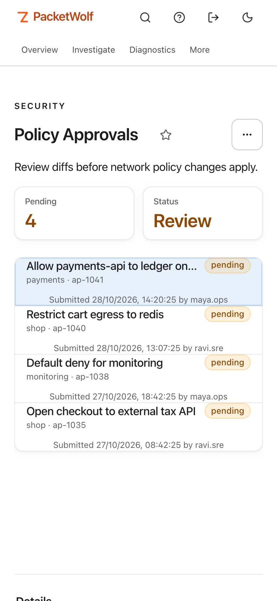
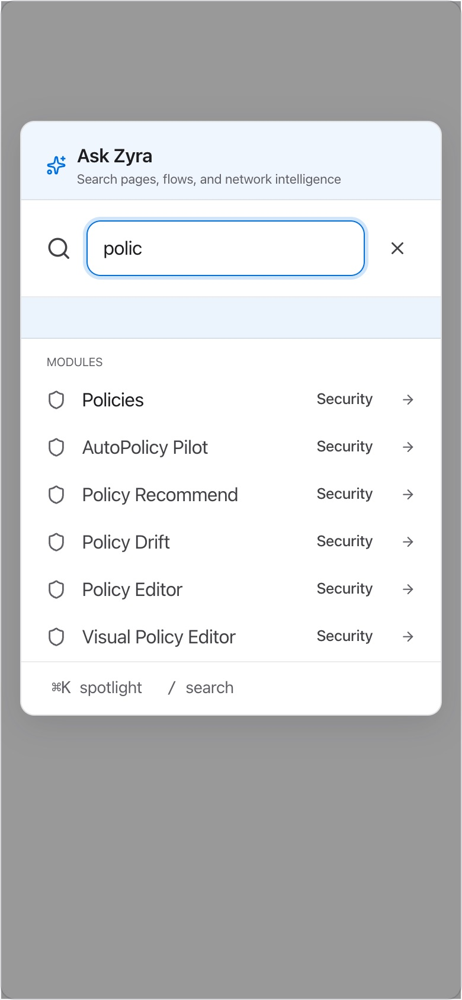

How it works
From a slow request to a fixed one.
Five steps, one console. The healer proposes and records fixes; it does not apply them for you.
See every flow
Hubble flows, verdicts, drops and L7 context on a live service map.
Name the process
Kernel attribution: which process made which call, not just which pod.
Write the policy
AutoPolicy learns real traffic and suggests Cilium rules.
One root cause
netpred explain joins kernel, DNS, network and Kubernetes evidence.
Propose the fix
The healer diagnoses drops and proposes a fix; you apply it. Chaos from the CLI checks it.
The console
Clean, fast, light or dark.
One web console for flows, topology, policy, approvals and audit. It follows your system theme, searches every page with ⌘K, and works on a phone. Pages show a dash or not available when data is missing, never an invented zero.










Screenshots are taken from the current build against synthetic sample data. Light and dark follow your system setting.
Security model
Deny by default. Decided on the server.
Every request needs a credential, and what it may see or do is enforced by the API. The console only mirrors those decisions.
Roles and capabilities
Viewer and partner read. Operator simulates and applies low-impact containment. Approver approves. Security-admin holds simulate, contain, approve and break-glass. Admin can do everything.
Namespace-scoped accounts
Limit an account to named namespaces. A flow is visible when its source or destination is in scope; cluster-level data is refused. The namespace list wins over the role, so a scoped admin is not a platform admin.
Approvals, two people
One person submits a Cilium policy, another reviews the diff and approves. The policy is validated again before it is applied. Both names, the namespace and every step are recorded.
Audit
State changes are logged with time, actor, action, target and outcome, kept 30 days. Actions that PacketWolf only records are marked recorded.
Sessions that end
Sign-out revokes the token on the server and closes open streams. Sessions have an absolute lifetime. Role and scope changes reach tokens already issued. Failed sign-ins lock out with doubling delays.
Hardened by default
No default password or key. Cluster-network trust is off. Every kubectl call passes an argument guard, outbound webhooks refuse private addresses unless allowed, and client addresses are trusted only from proxies you list.
| Action | Needs |
|---|---|
| Read flows, policies, maps | Any role, within the account's namespaces |
| Simulate, submit a policy for approval | Simulate capability (operator, security-admin, platform-admin, admin) |
| Approve or reject | Approve capability (approver, security-admin, admin) and the approval's namespace in scope |
| Apply directly, release, rollback; users and SSO settings | Unscoped admin |
What you get
A console, a CLI and an API.
90 pages
Observability, security, intelligence, operations, networking, eBPF data and system, plus 60 embeddable panels.
15 intelligence engines
Anomaly detection, AutoPolicy, healer proposals, root cause, forecasting and more.
Non-Kubernetes containers
A node agent surfaces Podman and Docker containers that cluster tools never see.
Roles, scopes and SSO
Users, roles and namespace scopes, with OIDC, SAML and LDAP sign-in, approvals and an audit log.
A documented API
Every REST route is described in a generated OpenAPI spec, with the role or capability it needs.
Every page is listed in the page index.
New in this release
Five additions in 2026.10.26.1.
BPF Attachments
Which eBPF programs PacketWolf expects, whether each is really attached, and drift. A silent loss of a hook after a NIC or kernel change becomes visible. Cilium's own programs are listed too.
Network changes
Which link, address, route or neighbour changed on a node, and when, with findings such as default route removed and uplink down. Linux only.
Per-second metrics
One-second rates for flows, API requests, 5xx responses and node network counters over the last 15 minutes. Sources that cannot be read say so.
Node isolation, shadow mode
A dry run of isolating a node: pods that would be evicted, services that would lose endpoints, blast radius. Changes nothing.
MCP server
18 read-only tools for Claude Code, Claude Desktop and other MCP clients. Off by default, same credentials as the API, stricter about who may call it.
Next release
Console and access refresh.
Built and documented, not in the published image yet. The image today is 2026.10.26.1; the release notes will say which tag carries these.
Netra-style console
Light and dark, a top bar, a search palette, a phone layout, honest numbers and error states, and tabs and filters kept in the URL.
Namespace-scoped accounts
Server-enforced scopes, a namespace switcher, and role or scope changes that reach tokens already issued.
Approvals with separate duties
Simulate to submit, Approve to decide, with submitter and reviewer recorded and every step audited.
Server-side sign-out
Token revocation that spans replicas with Redis, an absolute session lifetime, and a per-username lockout.
Complete OpenAPI
Every route documented with its tag, access rule and error responses, generated from the router so it cannot drift.
Safer chart defaults
Random first-install credentials, cluster-network trust off, a bundled and pinned kubectl, and node maintenance as an explicit opt-in.
Run it
One container, one minute.
# evaluation on one machine docker run -d --name packetwolf -p 9191:9191 \ -e JWT_SECRET="$(openssl rand -hex 32)" \ -e PACKETWOLF_ADMIN_API_KEY="$(openssl rand -hex 24)" \ -e PACKETWOLF_ADMIN_PASSWORD='choose-a-strong-password' \ ghcr.io/zyvorai/zyvor-packetwolf:latest # then open http://localhost:9191
The image runs the API and the web console on port 9191. Nothing ships with a default password or key: the three secrets above are required. Give it about 20 seconds to start, then sign in as admin.
Without a Kubernetes cluster and Cilium behind it, pages that depend on cluster data show their empty states. For the full experience, start a 30-day PoC; deployment packages come with it.
Linux x86_64 image. An arm64 image is not published yet.
In a cluster
Helm, with the deployment package.
# from the deployment package that comes with a trial or subscription helm upgrade --install packetwolf ./chart \ -n packetwolf-system --create-namespace \ --set api.persistence.enabled=true \ --set api.trustedProxies=<ingress pod or node CIDR> # credentials are generated on first install and kept on upgrade kubectl -n packetwolf-system get secret packetwolf-secret \ -o jsonpath='{.data.PACKETWOLF_ADMIN_PASSWORD}' | base64 -d
Needs Kubernetes with Cilium and Hubble. The chart generates a random admin password and API key on first install, trusts no caller by default, and bundles a pinned kubectl. Behind an ingress, list the proxy so lockouts and rate limits see real client addresses.
The container image is published at ghcr.io/zyvorai/zyvor-packetwolf (Linux x86_64). The chart and the install guide ship with the deployment package: book a 30-day PoC.
Documentation
Read before you run.
Feature guide (PDF)
Access, first workflows, the security model and every capability, with screenshots. Download, 29 pages.
Security summary
Roles, scopes, approvals, sessions and what is verified. Read.
Page index
Every console page and what it is for. Open.
MCP server
18 read-only tools for AI agents, off by default. Open.
Plans and licence
Proprietary, distributed as binaries.
| Plan | What you get |
|---|---|
| Community | Evaluation and non-production use, where the licence allows it |
| Professional | Entry edition, updates and upgrades, business-hours support |
| Enterprise | Advanced edition, updates and upgrades, priority support |
| Premium | Contracted scope with 24x7 critical intake |
Priced per managed core with an annual minimum. Quotes from sales@zyvor.dev. The licence text applies to the binaries.